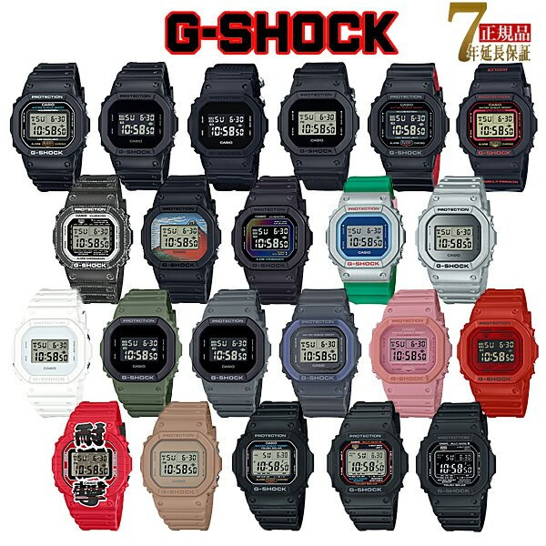
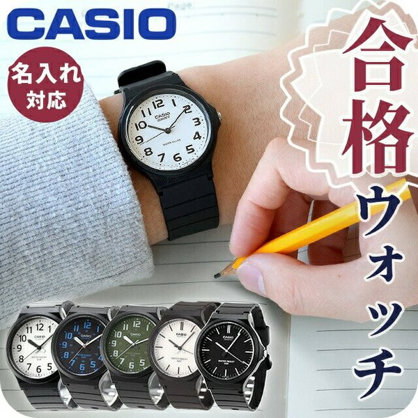
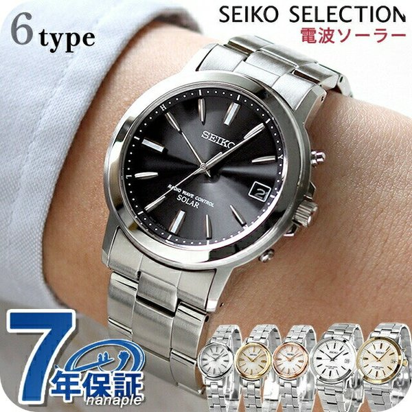
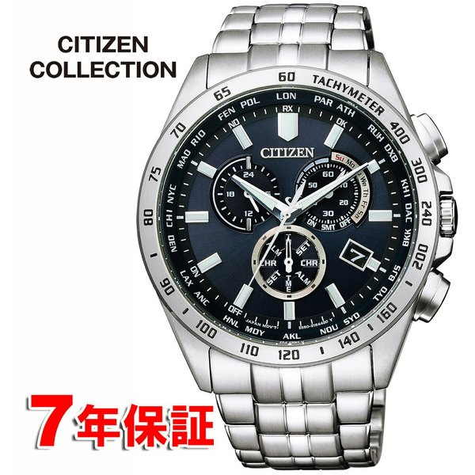
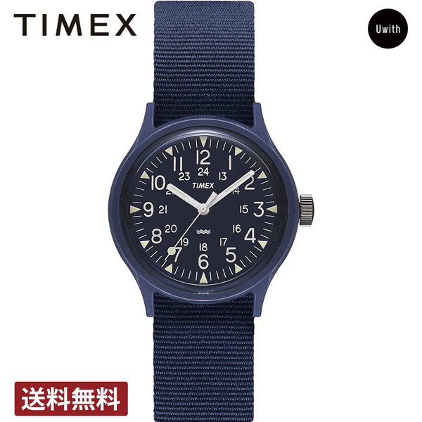
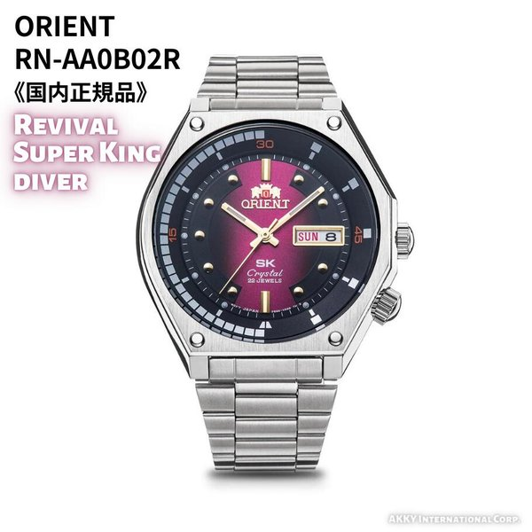
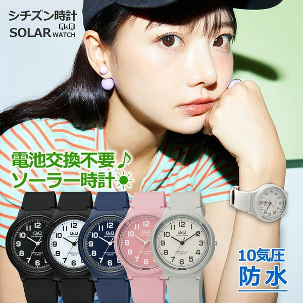
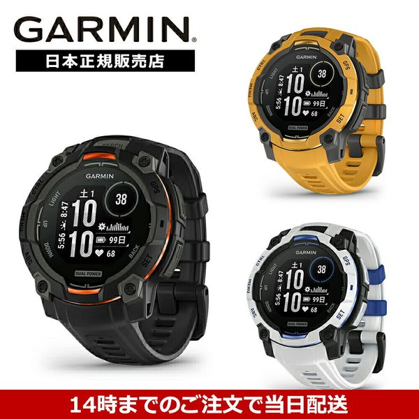
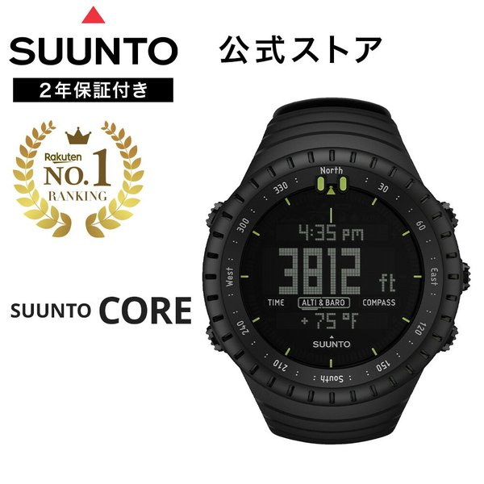
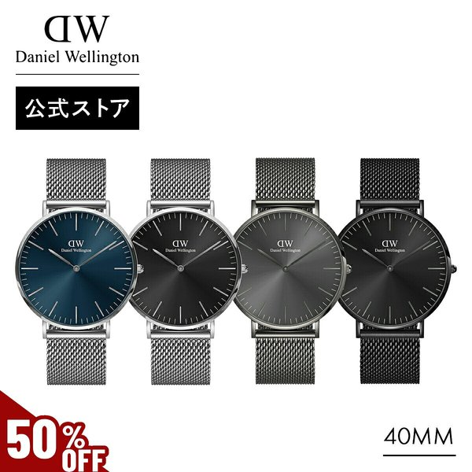

【2026年・腕時計10選】G-SHOCK DW-5600・セイコー セレクション電波ソーラー・シチズン コレクション・チープカシオ・TIMEX・ORIENT・Q&Q・GARMIN Instinct 3・SUUNTO CORE・Daniel Wellingtonを実売価格で比較
腕時計は、値段の幅がいちばん広い贈り物です。2,000円台のチープカシオから、6万円台のGPSウォッチまで、同じ「腕時計」でも中身はまったく違います。だからこそ、贈る相手の生活を思い浮かべて選ぶと、いちばん喜ばれます。
選ぶ軸は3つです。「まず電池の持ち方」。ソーラーと電波のモデルは電池交換が要らず、時刻も自動で合います。毎日使う人にはこの方式が向きます。「次に着ける場面」。スーツに合わせるなら薄いケースと金属バンド、休日に使うなら樹脂かナイロンのバンドが扱いやすいです。「最後にサイズ」。36〜40mmは手首が細い人にも収まり、45mmを超えると腕からはみ出して見えます。なお、レビュー件数が50件に満たない商品は記事内に実数を明記しています。
本記事では、楽天市場で人気・高評価の腕時計10選を、実売価格とレビュー評価つきで写真付き紹介します。
- おすすめ10選 スペック・特徴比較表
- BEST 1｜G-SHOCK DW-5600シリーズ（DW-5600UE-1／GW-M5610U-1Bほか型番を選べる）
- BEST 2｜チープカシオ MQ-24 海外モデル（名入れ・電池交換セット）
- BEST 3｜セイコー セレクション 電波ソーラー SBTM169（ほか6型から選べる）
- BEST 4｜シチズン コレクション エコ・ドライブ電波 クロノグラフ CB5870-91L
- BEST 5｜TIMEX キャンパー 36mm
- BEST 6｜ORIENT SKモデル RN-AA0B02R 自動巻き（手巻付き）
- BEST 7｜Q&Q ソーラー腕時計 E04Aシリーズ（10気圧防水）
- BEST 8｜GARMIN Instinct 3 Dual Power 45mm
- BEST 9｜SUUNTO CORE ALL BLACK SS014279010
- BEST 10｜Daniel Wellington Classic Mesh 40mm
- 【読者負担0円】買わなくても得する無料サービス
- まとめ：腕時計・ソーラー電波10選の選び方
| 順位 | 商品名 | ブランド | 最大の特徴・おすすめ理由 | 総合評価 |
|---|---|---|---|---|
| BEST 1 | G-SHOCK DW-5600シリーズ（DW-5600UE-1／GW-M5610U-1Bほか型番を選べる） | CASIO G-SHOCK | 20気圧防水で雨や水仕事を気にせず使える | 4.77 |
| BEST 2 | チープカシオ MQ-24 海外モデル（名入れ・電池交換セット） | CASIO（チープカシオ） | 名入れ込みで手頃な価格 | 4.74 |
| BEST 3 | セイコー セレクション 電波ソーラー SBTM169（ほか6型から選べる） | セイコー セレクション（SEIKO SELECTION） | 光で充電するので電池交換が不要 | 4.74 |
| BEST 4 | シチズン コレクション エコ・ドライブ電波 クロノグラフ CB5870-91L | シチズン コレクション（CITIZEN COLLECTION） | 光発電エコ・ドライブで電池交換不要 | 4.70 |
| BEST 5 | TIMEX キャンパー 36mm | TIMEX（タイメックス） | 36mmで手首が細い人にも合う | 4.40 |
| BEST 6 | ORIENT SKモデル RN-AA0B02R 自動巻き（手巻付き） | オリエント（ORIENT） | 自動巻きと手巻きの両方に対応 | 4.83 |
| BEST 7 | Q&Q ソーラー腕時計 E04Aシリーズ（10気圧防水） | Q&Q（シチズンQ&Q） | 電池交換が不要 | 4.65 |
| BEST 8 | GARMIN Instinct 3 Dual Power 45mm | ガーミン（GARMIN） | ソーラー充電で電池持ちが長い | 4.73 |
| BEST 9 | SUUNTO CORE ALL BLACK SS014279010 | スント（SUUNTO） | 高度計・気圧計・コンパスを搭載 | 4.25 |
| BEST 10 | Daniel Wellington Classic Mesh 40mm | ダニエル・ウェリントン（Daniel Wellington） | 薄いケースで袖口に収まる | 4.81 |
G-SHOCK DW-5600シリーズ（DW-5600UE-1／GW-M5610U-1Bほか型番を選べる）

G-SHOCKのスクエア型は、1983年から続く定番の形です。この出品はDW-5600UE-1をはじめ、電波ソーラーのGW-M5610U-1Bなど複数の型番から選べる逆輸入モデル。樹脂バンドで軽く、20気圧防水とストップウオッチ、アラームを備えています。楽天市場での実売価格は約11,880円（2026年11月時点）。
- 20気圧防水で雨や水仕事を気にせず使える
- 型番を選べるので予算と機能で絞れる
- 樹脂バンドで軽く、普段づかいに向く
- 型番によって電波ソーラーの有無が変わるので、注文前に機能を確認する
チープカシオ MQ-24 海外モデル（名入れ・電池交換セット）

チープカシオと呼ばれるMQ-24は、3針のアナログ表示だけを残したシンプルな電池式の腕時計です。この出品は名入れと電池交換がセットになった価格で、文字盤に名前を入れられます。就職祝いや合格祝いなど、名入れが必要な場面で使いやすい商品です。楽天市場での実売価格は約2,680円（2026年11月時点）。
- 名入れ込みで手頃な価格
- 電池交換がセットになっている
- 3針アナログで文字盤が読みやすい
- 海外モデルのため、付属の説明書や保証の内容は日本国内モデルと異なる
セイコー セレクション 電波ソーラー SBTM169（ほか6型から選べる）

セイコー セレクションの電波ソーラーは、光で充電して電波で時刻を合わせるモデルです。この出品はSBTM169を含む6型から選べ、販売店の7年保証が付きます。白い文字盤に細い針のモデルは、スーツにも私服にも合わせやすいデザインです。楽天市場での実売価格は約31,350円（2026年11月時点）。
- 光で充電するので電池交換が不要
- 電波で時刻を自動合わせ
- 販売店の7年保証付き
- 型ごとに文字盤の色と価格が変わるので、選ぶ型を決めてから注文する
シチズン コレクション エコ・ドライブ電波 クロノグラフ CB5870-91L

シチズンのエコ・ドライブは、光を電気に変えて動く仕組みです。CB5870-91Lはクロノグラフとワールドタイム、ダイレクトフライトを備え、海外出張や旅行でも現地時刻に合わせられます。青い文字盤にステンレスのバンドで、仕事の日にも使える見た目です。楽天市場での実売価格は約44,660円（2026年11月時点）。
- 光発電エコ・ドライブで電池交換不要
- クロノグラフとワールドタイム搭載
- ダイレクトフライトで時差合わせが早い
- この記事のなかでは価格が高い部類になる
TIMEX キャンパー 36mm

TIMEXのキャンパーは、36mmの小さめのケースにナイロンバンドを合わせたクオーツ式の腕時計です。数字が大きく、暗い場所でも見やすい文字盤。ブランド直営店の出品で、カジュアルな服にもスーツの袖口にも収まります。楽天市場での実売価格は約10,890円（2026年11月時点）。
- 36mmで手首が細い人にも合う
- ナイロンバンドで軽い
- 数字が大きく見やすい
- レビュー15件とまだ少なく、36mmは男性には小ぶりに感じる
ORIENT SKモデル RN-AA0B02R 自動巻き（手巻付き）

ORIENTのSKモデルは、1960年代のデザインを復刻した自動巻きの腕時計です。赤い文字盤にスーパーキングダイバーの表記が入り、手巻きにも対応します。国内正規品で、機械式時計の入門として選びやすい価格帯です。楽天市場での実売価格は約21,500円（2026年11月時点）。
- 自動巻きと手巻きの両方に対応
- 復刻デザインの赤い文字盤
- 国内正規品で安心して買える
- 機械式なので日差があり、クオーツほど正確ではない
Q&Q ソーラー腕時計 E04Aシリーズ（10気圧防水）

シチズンQ&Qのソーラー腕時計は、光で充電して電池交換なしで動きます。10気圧防水と静音の秒針で、試験や仕事の場でも音が気になりません。樹脂とウレタンのバンドで軽く、色違いから選べます。楽天市場での実売価格は約3,980円（2026年11月時点）。
- 電池交換が不要
- 静音の秒針で試験や会議でも使える
- 10気圧防水
- カジュアルな見た目なので、スーツには合わせにくい
GARMIN Instinct 3 Dual Power 45mm

ガーミンのInstinct 3 Dual Powerは、ソーラー充電に対応したGPSスマートウォッチです。45mmのケースに方位や気圧のセンサーを備え、登山やランニングの記録に使えます。日本正規品で、3色から選べます。楽天市場での実売価格は約65,211円（2026年11月時点）。
- ソーラー充電で電池持ちが長い
- GPSと気圧・方位センサー搭載
- 日本正規品
- レビュー15件と少なく、この記事でいちばん高い
SUUNTO CORE ALL BLACK SS014279010

SUUNTO COREは、高度計・気圧計・コンパスの3つを備えたアウトドア用の腕時計です。ボタン式で操作が分かりやすく、電池式なので充電を気にせず山や海に持っていけます。公式ストアの出品で、2年間のサポートが付きます。楽天市場での実売価格は約19,800円（2026年11月時点）。
- 高度計・気圧計・コンパスを搭載
- 電池式で充電不要
- 公式ストアで2年間のサポート付き
- レビュー24件と少なく、スマートウォッチのような通知機能はない
Daniel Wellington Classic Mesh 40mm

Daniel WellingtonのClassicは、薄いケースにメッシュの金属バンドを合わせた2針の腕時計です。40mmのケースで、文字盤に数字を置かず線だけにしたデザイン。公式ストアのセールで、4色から選べます。楽天市場での実売価格は約17,215円（2026年11月時点）。
- 薄いケースで袖口に収まる
- メッシュバンドで金属の質感がある
- 公式ストアのセール価格
- レビュー16件と少なく、2針なので秒単位は読めない
この記事の商品を買う前に、まずは無料で得する選択肢をチェック。どれも登録・利用は0円で、無料期間中に解約すれば料金はかかりません。読みたい雑誌がある人、ポイントを貯めたい人、アンケートなら気軽という人、それぞれに合うものを選べます。
初回31日無料・無料期間中に解約すれば0円 → 楽天ポイントモール｜登録無料で毎日ポイ活
買い物なしでもポイントが貯まる無料サービス → 楽天インサイト｜アンケートに答えてポイント
登録無料・すきま時間のアンケートで貯まる → 楽天カード｜年会費永年無料
新規発行・年会費ずっと0円 →
4つのサービスの違いと使い分けは「出費0円で得する！買わずにポイントが貯まる無料サービス厳選4選」でまとめています。
💡 まとめ：腕時計・ソーラー電波10選の選び方
腕時計は、毎日つけるものと休日につけるもので分けると選びやすくなります。毎日つけるなら、光で充電して電波で時刻を合わせるセイコー セレクションのSBTM169、シチズン コレクションのエコ・ドライブ電波CB5870-91L、Q&Qのソーラー。どれも電池交換の手間がありません。仕事と休日の両方に使うなら、G-SHOCKのDW-5600シリーズは20気圧防水で気兼ねなく使えます。予算を抑えて名入れをしたい場面では、チープカシオのMQ-24が2,000円台で名前を入れられます。山やランニングで使うなら、GARMIN Instinct 3 Dual Powerのソーラー充電とGPS、SUUNTO COREの高度計・気圧計・コンパスが役に立ちます。文字盤のデザインで選ぶなら、TIMEX キャンパー36mm、ORIENT SKモデル、Daniel Wellington Classic Meshの3本。まずは相手が毎日つけるかどうかで、この3つの方向から選ぶと迷いません。
楽天市場では「5と0のつく日」や「お買い物マラソン」などのキャンペーンに合わせて購入すると、ポイント還元が最大化してお得に手に入ります。ぜひチェックしてみてくださいね。